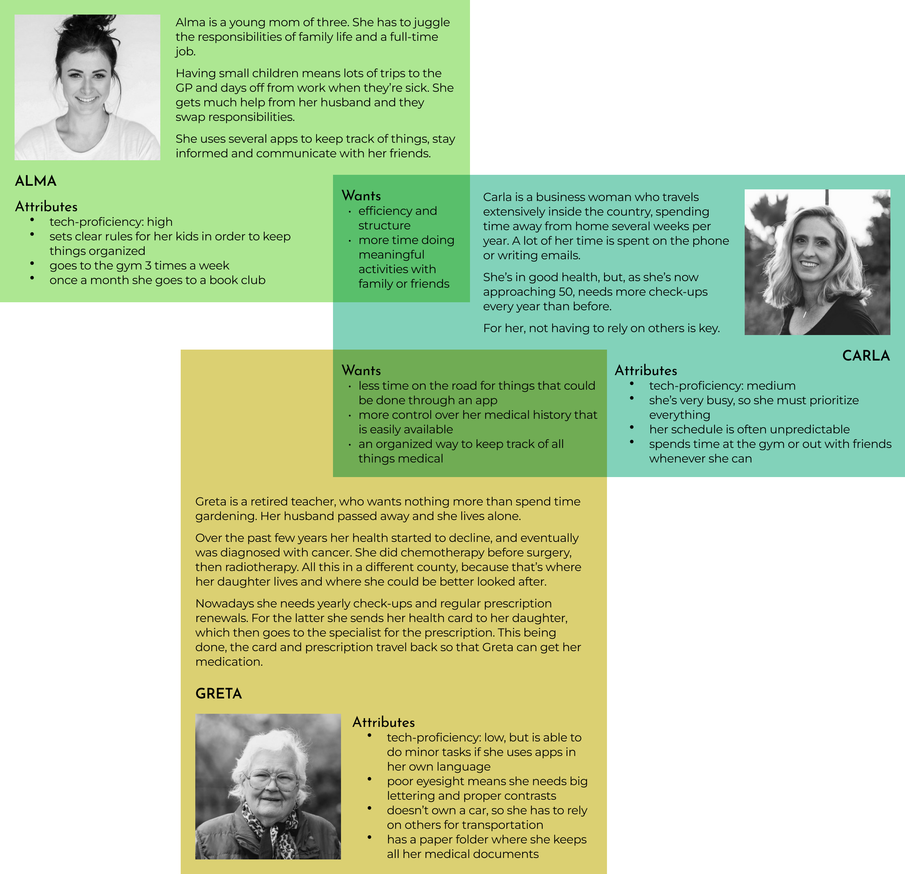
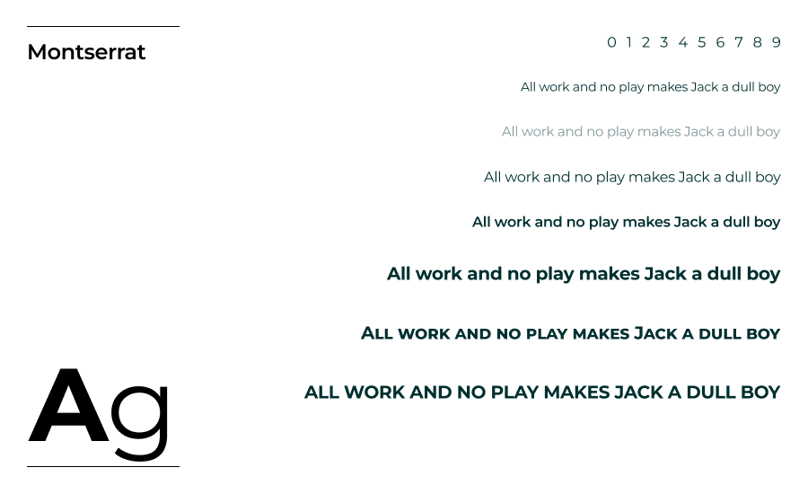

Context
The intended users of this app are patients, medical professionals would still work withing the same informatic system. The CAS app is designed to make a connection between that system and the users, making the use of paper redundant. In order for users to log in, they would have to get a security password from their family physician, to ensure that the app is conected to the National Healthcare System.
However, for this app to fully function, changes in the healthcare system would be necessary. For example: prescriptions and referrals shouldn't be in-person events (unless one really wants to), physicians should be able to write everything in a database, not on paper, and communicate over the phone/app, an intercounty database should be the default option.
With this in mind, the app is meant to be used not just by a segment of population that is tech-savvy, but by other smartphone users too. So functionality is key: the sign-in process should be smooth and simple, its structure should be straightforward, the language should avoid any misunderstanding.
Research
From my findings, there is no competition for this kind of app. The only thing that comes closer is "Dosarul Electronic de Sănătate" (DES) - a CNAS initiative to make the patients medical history easily available to medical professionals. But this is a platform that basically logs online your medical paper trail and lets you read it.
Let's review some of the aspects that make the current system suboptimal.
Scenario 1

You have an acute condition and your GP asks for tests and a specialist consultation. All these include taking paper documents from one point to another. Drawbacks in using the current "paper system":
- you cannot understand the medic's handwriting
- you lose it
- you put it somewhere and it gets torn
- you always have to have both: paper & card
Scenario 2

You have a cronic disease which requires on-going treatment with a specialist from another part of the country. The treatment involves anual check-ups and prescriptions every 90 days. For each renewal you have to make a trip to that physician or send your card to someone in order to get the new prescription.
Scenario 3

You go to the pharmacy with a prescription. The handwriting on it is illegible and you have to trust the pharmacist to understand it. Your health card can't be scanned, it has to be inserted in a card reader with a short cord, so you are required to say your PIN aloud, and anyone can hear it.
Analysis
To illustrate my findings, I put together 3 user personas. In using the healthcare system, they all gravitate toward the same goals, but due to their age, they prioritize things differently:
- a young mother of three wants efficiency and structure
- a traveling woman with no time to spare wants less time on the road for useless things that could be done through an app
- a retired lady with cancer treatment wants less time spent in the physician's waiting area or traveling to another county for each prescription renewal just beacause that's where her oncologist is
Concept
The already existing - let's pretend always functioning - DES platform is very useful, and since you can access it with a securely generated password received from your GP, I consider it beneficial to be in connection with the CAS app. If both can be accessed with the same password, why not have them in the same place? They would complement each other, so that a patient could easily find any medical information.
Since all you need to log in is a password, there is no sign-in / sign-up options, no email address, as older people may not have one or don't check it regularly. All medical documents received from healtcare providers would be managed through the app, so there is no real need for an email.
Wireframes
Slider navigation options: autoplay | mouse drag | swipe | arrow keys
A bar code easily accessible from any page would be the thing that replaces the card. Instead of having a card introduced in a card reader, that doesn't always function, you would reveal the bar code to be scanned.
Other than the DES button to access your medical history, the app contains 4 more sections (buttons on main page): family physician, pharmacy, specialist physician, medical investigations. It works like this: users would ask their GP for a referral, the GP sends one back, but this will go to the specialist section, because that's where they would use it. The specialist in return sends a referral for an MRI, and that would be logged in the investigations section. Any prescription sent by a physician would enter the pharmacy section.
Font picks
Color swatches
Result
This app was not design to replace in-person annual check-ups, and patients should still physically report to professionals when necessary. However, as we've seen recently, unexpected events can quickly prove technologies to be critical.